Today's Flow きょうの ながれ
- Hello!Welcome
- Mini lessonThis page — Part 1 & Part 2
- WatchTea demo: the host makes tea for you
- Try in pairsTake turns: host 亭主（ていしゅ）and guest 客（きゃく）
- NijiriguchiEnter through the small door (if we have time)
- PhotoGroup photo 📸
Discover しる
Where tea came from, and why the world loves matcha now.
From China to Japan れきし
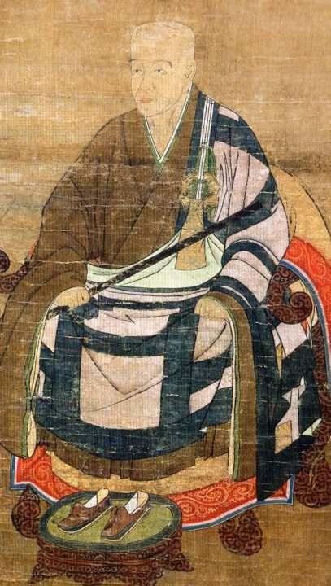
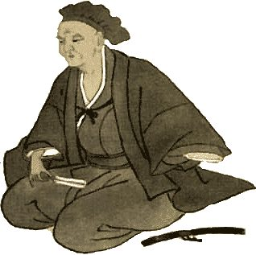
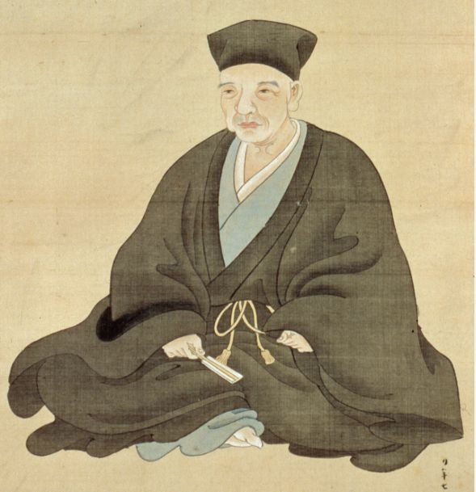
- Early 800sJapanese monks bring tea back from China.
- 1191Monk Eisai 栄西（えいさい） brought tea seeds and the Song-dynasty method of drinking powdered tea to Japan.
Note: This powdered tea was different from modern matcha.
- 1211Eisai wrote Japan's first book about tea: “Drinking Tea for Health.”
- 1400sZen + tea. Murata Jukō 村田珠光 started “wabi-cha” — simple, quiet tea.
- 1500sSen no Rikyū 千利休（せんのりきゅう） perfected the Way of Tea — 茶道（さどう / ちゃどう）.
Sen no Rikyū & Tea Today せんのりきゅう
Golden Tea Room
Shiny gold. Shows power.
Small, Simple Room
Quiet beauty = wabi わび
Rikyū (1522–1591) was tea master for the samurai rulers Nobunaga and Hideyoshi. In 1591, Hideyoshi ordered him to die.
3 schools by his great-grandsons: 表千家 Omotesenke · 裏千家 Urasenke ★today · 武者小路千家 Mushakōjisenke
Urasenke today
Sources: Urasenke official website (overseas offices, as of Jan 2024); AFP/Kyodo news (Aug 14, 2025).
Zen & Mindfulness ぜん
Four words by Rikyū — 和敬清寂（わ・けい・せい・じゃく）
Tea is a “total art”: garden, architecture, calligraphy, flowers, ceramics, kimono, sweets.
Fewer Students in Japan, Bigger Boom in the World! ブーム
JAPAN: People who do tea ceremony
Down to about 1/3 in 20 years ↓
Fewer and older students in Japan. Men: up 1.5× from 2011 to 2016 ↑
*2021: survey year during COVID-19
WORLD: Japan's green tea exports
¥ billion (most of it is matcha & powdered tea)
About 7× in 10 years ↑
Matcha lattes & sweets worldwide — Japan can't make enough matcha!
Sources: MIC Survey on Time Use and Leisure Activities (2001–2021, participants aged 10+); Ministry of Finance Trade Statistics via Japan Tea Export Council & House of Councillors report (2025).
How Matcha Is Made まっちゃの つくりかた
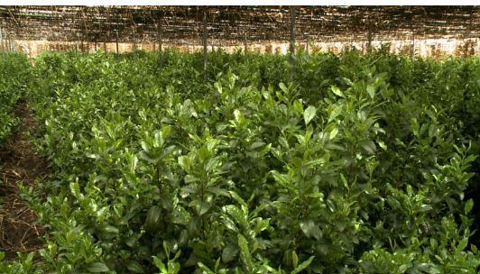
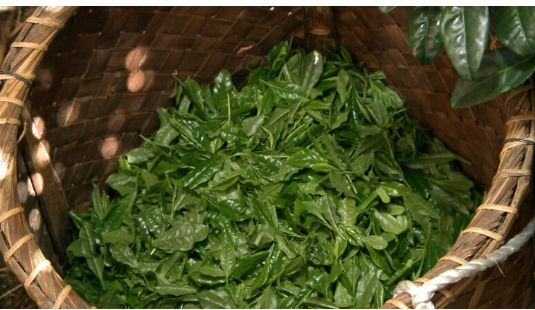
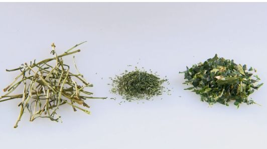
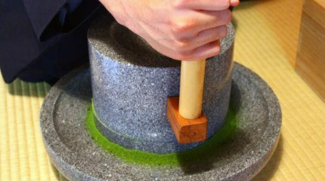
Matcha vs. Other Teas ちがい
| Matcha 抹茶 | Sencha 煎茶 | Black tea 紅茶 | |
|---|---|---|---|
| Grown | In shade | In the sun | In the sun |
| Made | Steamed, not rolled, ground | Steamed & rolled | Fully oxidized |
| You drink… | The WHOLE leaf 🍃 | Only the water | Only the water |
| Taste | Rich umami, sweet & a little bitter | Fresh, grassy | Strong, deep |
Two kinds of matcha tea
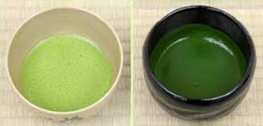
= Americano ☕ ★today
2 g + 60–70 ml hot water
= Espresso ☕☕
4 g + 40 ml hot water
Experience やってみる
Tools, the tea room, and how to be a guest and a host.
Tea Tools どうぐ
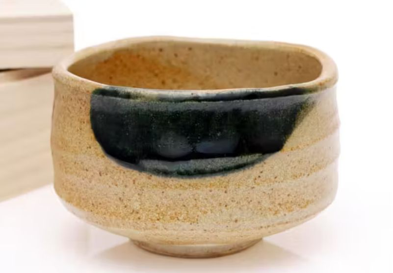
tea bowl
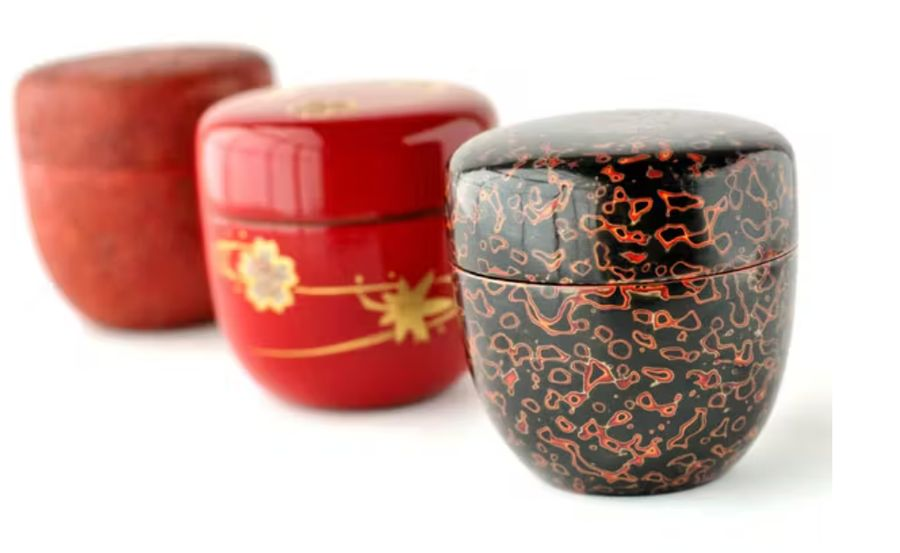
tea caddy
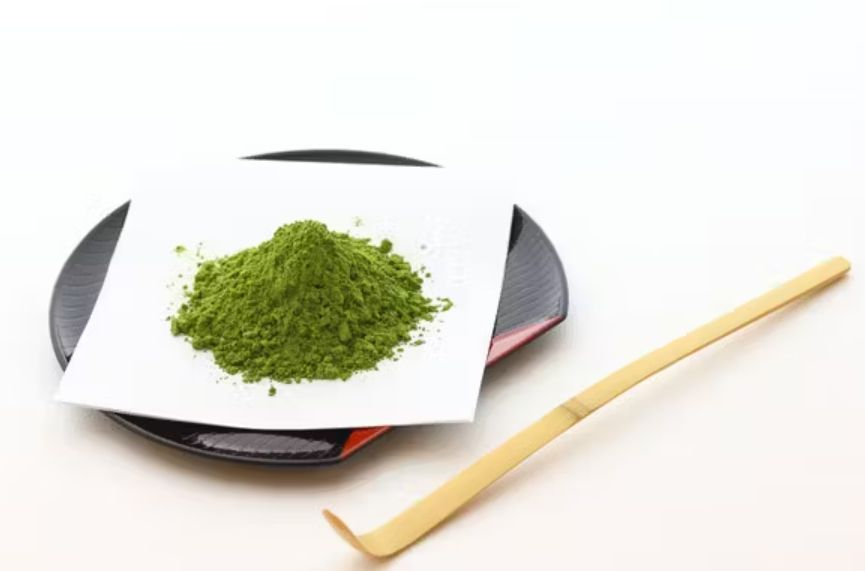
tea scoop
tea whisk
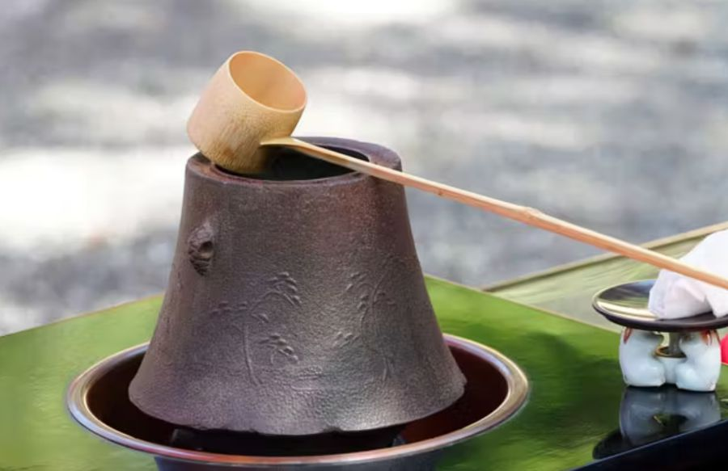
kettle & ladle
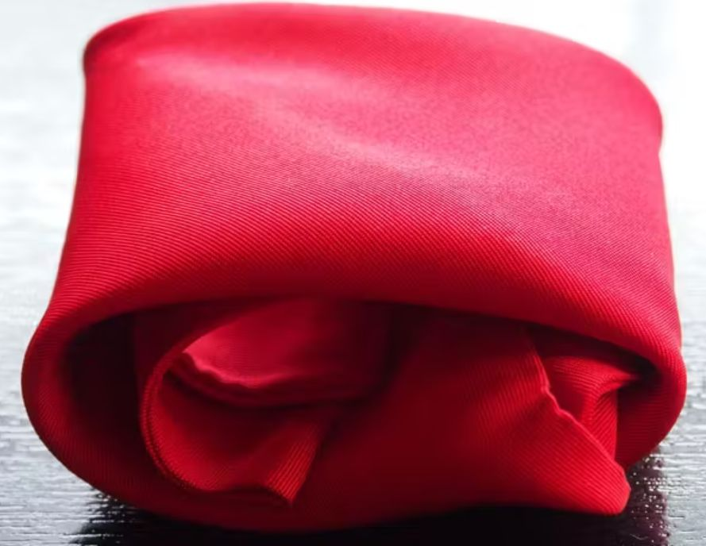
silk cloth
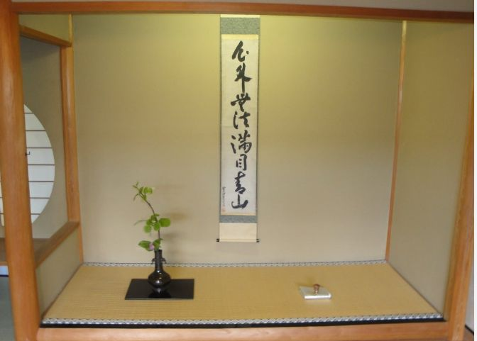
alcove: scroll & flowers
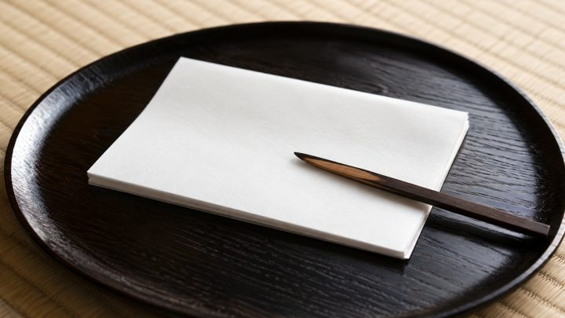
kaishi paper & kuromoji pick
Tea Room Doors いりぐち
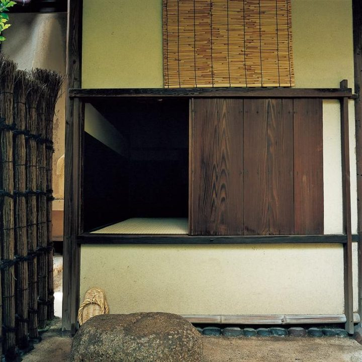
Small door for guests (about 60–70 cm). ★
Tall door for noble guests. Walk in.
Door for the host.
Door for serving food.
Entering the Tea Room はいりかた
- Before you enterTake off watches & rings — they can scratch the bowl. Wear clean socks.
- Bow at the doorSit, bow, then go in on your knees.
- Don't step on edgesDon't step on the tatami edges (へり heri).
- Look at the alcoveBow and enjoy the scroll and flowers in the 床の間 tokonoma.
- Sit in seiza 正座Legs hurt? It's OK to relax your legs. 😊
- No perfumeTea has a gentle smell. Please enjoy it!
Guest ① Sweets: Types & How to Eat しゅるいと たべかた
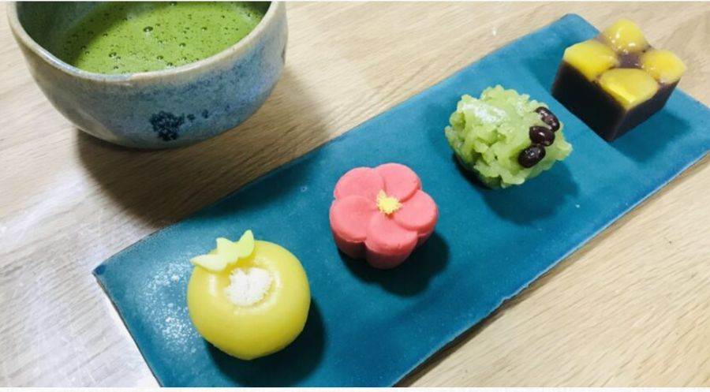
主菓子 おもがし
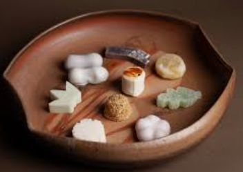
干菓子 ひがし
Guest ② Drinking Tea のみかた
- Place the bowl between you and the next guest. Bow lightly and say:
おさきにOsaki ni — “Excuse me for going first.”
If someone drank before you, say to them: おしょうばん させて いただきますOshōban sasete itadakimasu — “I will join you.” - Place the bowl in front of you. Bow deeply and say: おてまえ ちょうだい いたしますOtemae chōdai itashimasu — “Thank you for the tea.”
- Pick up the bowl with your right hand and put it on your left palm. Raise it slightly to thank the host.
- Turn the bowl clockwise ↻ twice to avoid the front. Enjoy the tea. Slurp on the last sip.
- Wipe the rim with your right thumb and index finger, left to right. Wipe your fingers on the kaishi.
- Turn the bowl counter-clockwise ↺ twice, so the front faces you.
- Put it down and look at its shape. Pick it up with both hands to look closer (keep it low). Put it down and look again.
- Turn the bowl clockwise so the front faces the host and return it.
Host: Making Matcha たてかた
- Matcha in1.5 scoops (about 2 g) with the 茶杓 chashaku.
- Hot water inAbout 50–70 ml. Pour slowly.
- Whisk!Move your wrist quickly back and forth in a straight line — slow → fast.
- Finish with “の”Make fine foam. Draw the hiragana の (“no”) on top, then lift the whisk from the center.
- ServeTurn the bowl so its front faces your guest. Bow together.
Let's Say It Together! いってみよう
Audio is not available in this browser. Please read the romaji aloud!
Enjoy Matcha & Sweets in Japan おすすめ
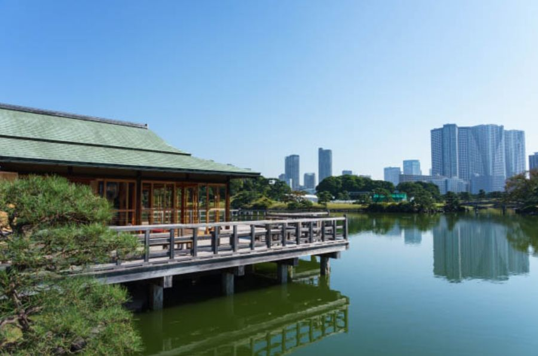
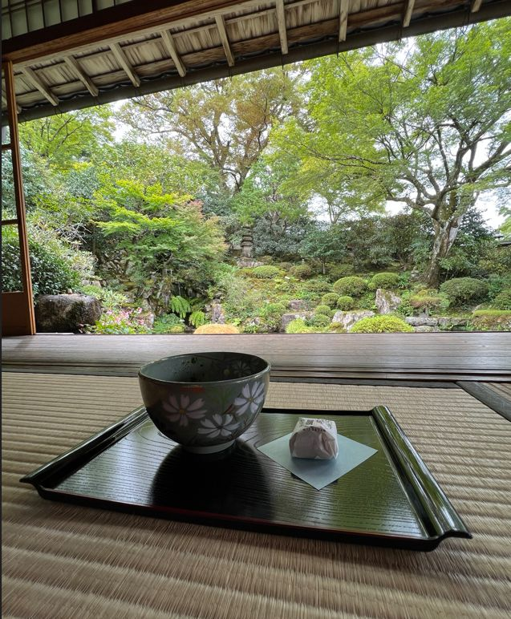
Tips & Quiz もっと
Famous people who love tea — then test yourself!
Famous Matcha & Tea Fans ゆうめいじん
Inspired by Japanese tea
He loved Zen and Kyoto (“Kyoto has the real thing”). In 1996 he met the potter Shakunaga Yukio 釋永由紀夫 (Etchū-Seto ware, Toyama) at a show in Kyoto and bought many of his works. One of his first orders was a tea bowl 茶碗.
In a 2017 GQ Style interview, he made matcha for the writer: he sifted the powder, poured hot water and whisked it with a bamboo whisk (茶筅 chasen) — just like you today!
They love matcha! 💚
Loves matcha so much that she invested in a matcha energy drink company (2018).
A matcha latte lover — her 2015 matcha latte photo went viral in the US.
Matcha is part of her wellness life — her brand's daily supplement even includes matcha.
Often seen at matcha cafés in LA. Hailey says: “When you drink a matcha from Japan, it spoils everything for you.”
A true matcha girl — she even goes on “matcha dates” with her dog!
Writers & books 📚
In 1916 he stayed for about 2½ months at Sankeien 三溪園 in Yokohama — a garden with historic tea houses, built by the tea lover Hara Sankei. He wrote his poems “Stray Birds” there. He was also a friend of Okakura Kakuzō (below).
A short book that explained tea and Zen to the world. It inspired the US architect Frank Lloyd Wright and the painter Georgia O'Keeffe. Still easy to find in English — a great first book!
A famous novel about people and old tea bowls, set around the tea ceremony. Available in English.
Quick Quiz クイズ
Tap your answer. Score: 0 / 5